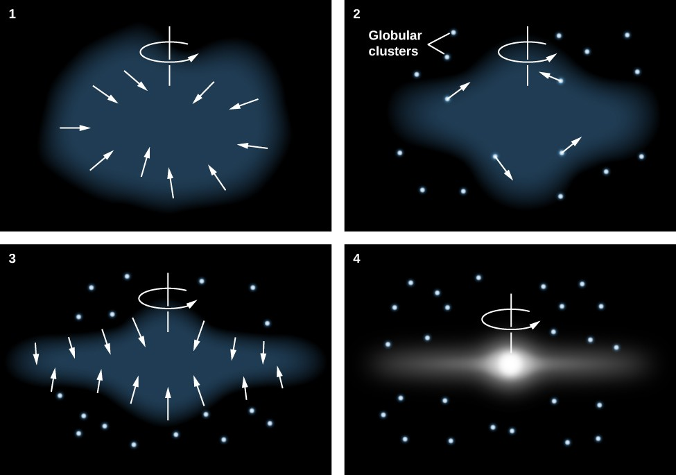
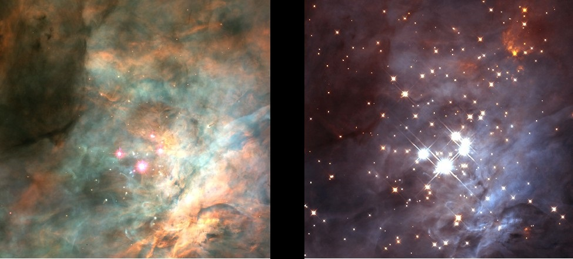

The Milky Way began as one or several small overdensities in the mass distribution in the Universe shortly after the Big Bang. Some of these overdensities were the seeds of globular clusters in which the oldest remaining stars in what is now the Milky Way formed. Nearly half the matter in the Milky Way may have come from other distant galaxies. Nonetheless, these stars and clusters now comprise the stellar halo of the Milky Way. Within a few billion years of the birth of the first stars, the mass of the Milky Way was large enough so that it was spinning relatively quickly. Due to conservation of angular momentum, this led the gaseous interstellar medium to collapse from a roughly spheroidal shape to a disk. Therefore, later generations of stars formed in this spiral disk. Most younger stars, including the Sun, are observed to be in the disk.
Since the first stars began to form, the Milky Way has grown through both galaxy mergers (particularly early in the Milky Way's growth) and accretion of gas directly from the Galactic halo. The Milky Way is currently accreting material from several small galaxies, including two of its largest satellite galaxies, the Large and Small Magellanic Clouds, through the Magellanic Stream. Direct accretion of gas is observed in high-velocity clouds like the Smith Cloud. However, properties of the Milky Way such as stellar mass, angular momentum, and metallicity in its outermost regions suggest it has undergone no mergers with large galaxies in the last 10 billion years. This lack of recent major mergers is unusual among similar spiral galaxies; its neighbour the Andromeda Galaxy appears to have a more typical history shaped by more recent mergers with relatively large galaxies.
 Watch this Video to undersand Better :-